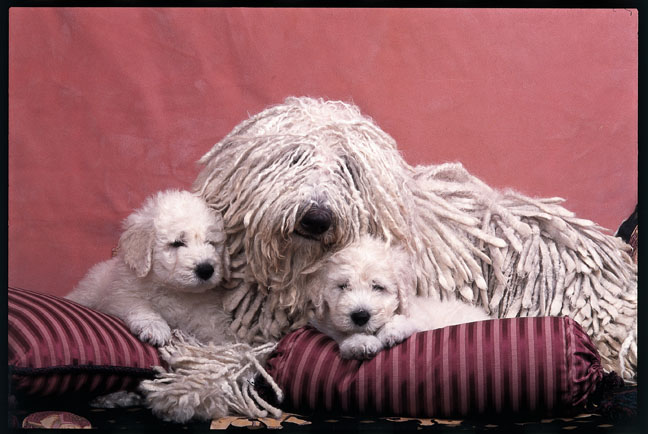

Believe it or not, this dog was not bred to clean your floors. The mop-like coat is actually used as a clever form of camouflage. When keeping watch over a flock of sheep, it’s easy for Komondorok to blend in thanks to their wooly fur. This works to their advantage when an unsuspecting wolf comes over to snack on the sheep: The guard dogs can surprise the predator and keep it from gobbling up the livestock.
AThanks to their pedigree as herd dogs, Komondorok are excellent protectors. But because of this, they tend to be wary of strangers and don’t get along very well with pets outside of the family. It’s important to socialize a Komondor early to prevent any future conflicts with neighbors (or neighbors' pooches).
